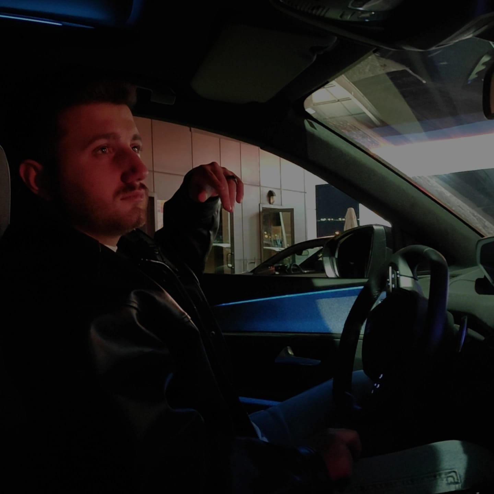

Samet Sarı!
Erzurum doğumlu, bilgisayar mühendisliği öğrencisi olan Samet Sarı...

Hobileri!
Hobilerim hakkında...
Gelecek bizleri bekliyor!
Hedefim, sadece başarılı bir mühendis olmakla sınırlı değil...